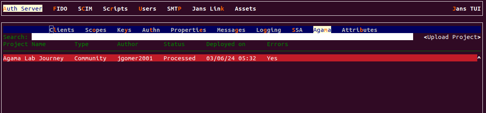
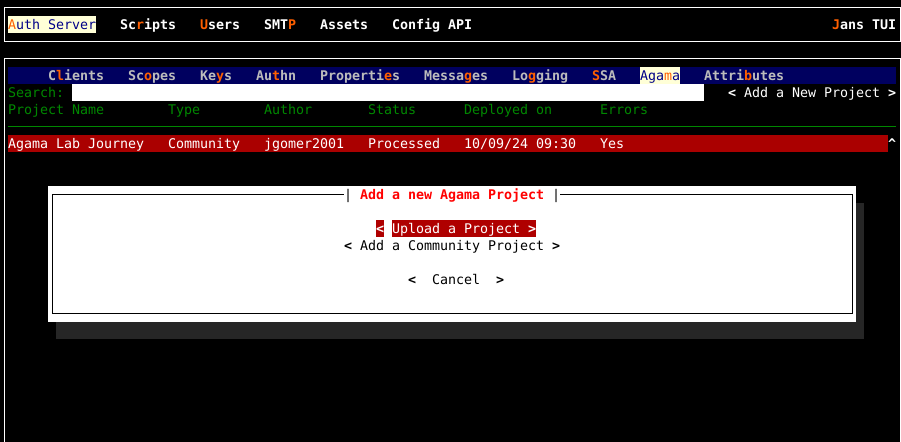
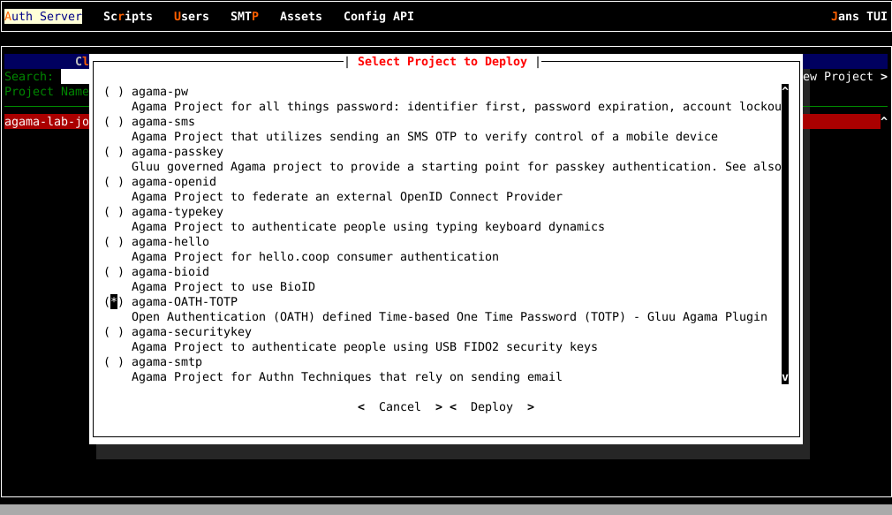
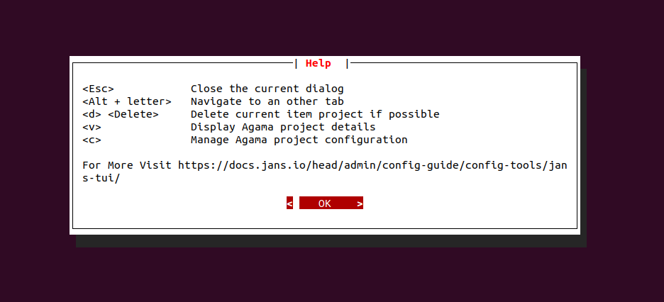
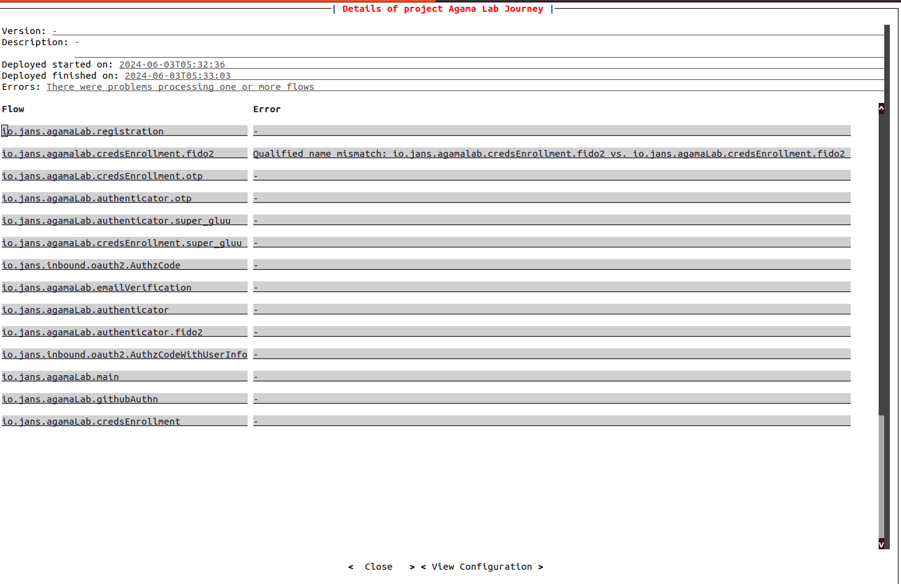
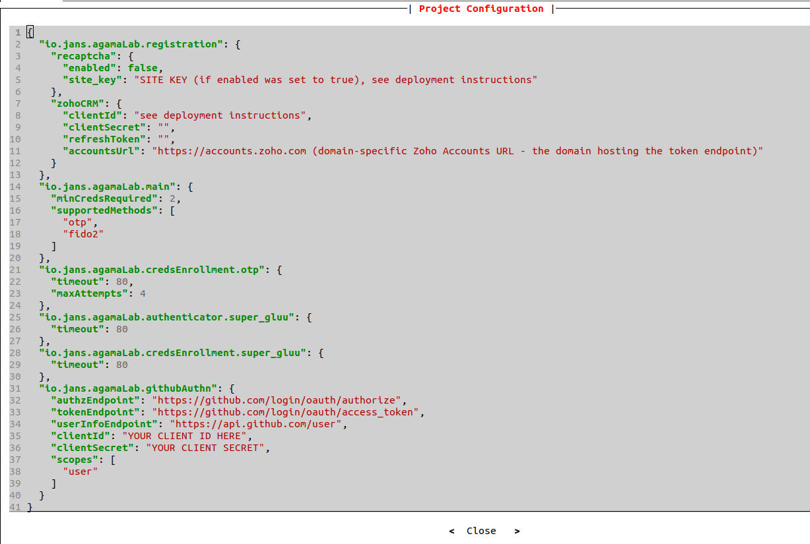
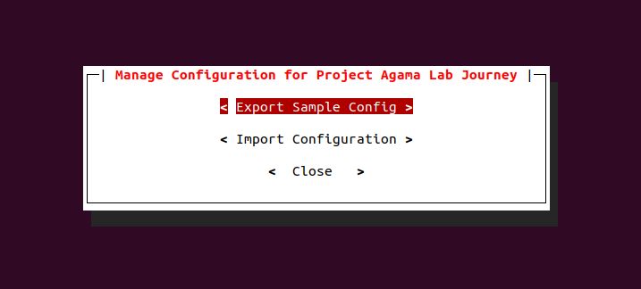

Agama project configuration#
Agama project configuration involves adding and removing Agama projects to Janssen Server along with configuring and troubleshooting these project deployments.
The Janssen Server provides multiple configuration tools to perform these tasks.
Use the command line to perform actions from the terminal. Learn how to use Jans CLI here or jump straight to the configuration steps
Use a fully functional text-based user interface from the terminal. Learn how to use Jans Text-based UI (TUI) here or jump straight to the configuration steps
Use REST API for programmatic access or invoke via tools like CURL or Postman. Learn how to use Janssen Server Config API here or Jump straight to the configuration steps
Using Command Line#
In the Janssen Server, you can deploy and customize the Agama project using the
command line. To get the details of Janssen command line operations relevant to
Agama projects, you can check the operations under Agama task using the
command below:
jans cli --info Agama
It will show the details of the available operation-ids for Agama.
Operation ID: get-agama-prj-by-name
Description: Fetches deployed the Agama project based on the name.
Parameters:
name: Agama project name [string]
Operation ID: post-agama-prj
Description: Deploy an Agama project.
Parameters:
name: Agama project name [string]
Operation ID: delete-agama-prj
Description: Delete a deployed Agama project.
Parameters:
name: Agama project name [string]
Operation ID: get-agama-prj-configs
Description: Retrieve the list of configs based on name.
Parameters:
name: Agama project name [string]
Operation ID: put-agama-prj
Description: Update an Agama project.
Parameters:
name: Agama project name [string]
Parameters:
type: Description not found for this property
additionalProperties: Description not found for this property
Operation ID: get-agama-prj
Description: Retrieve the list of projects deployed currently.
Parameters:
start: No description is provided for this parameter [integer]
count: No description is provided for this parameter [integer]
In the sections below, we will see how to configure and manage Agama projects via the command line using the above operations.
List Deployed Projects#
Use the get-agama-prj operation to retrieve the list of deployed Agama
projects:
jans cli --operation-id get-agama-prj
The output will list Agama projects that are added to this Janssen Server deployment.
| Sample Output | |
|---|---|
1 2 3 4 5 6 7 8 9 10 11 12 13 14 15 16 17 18 19 20 21 22 23 24 25 26 27 28 29 30 31 | |
Endpoint Arguments#
Endpoint arguments are parameters passed to an API or function to specify how and what data to retrieve or process.
There are two endpoint arguments available to the get-agama-prj operation.
-
start: Should be an integer value. It's an index value of the starting point of the list. -
count: Should be an integer value. Total entries number you want to display.
For example, to fetch details of the project at index 1 only, use the command below.
jans cli --operation-id get-agama-prj --endpoint-args start:1,count:1
| Sample Output | |
|---|---|
1 2 3 4 5 6 7 8 9 10 11 12 13 14 15 16 17 18 19 20 21 22 23 | |
View Agama Project By Name#
You can get the details of an Agama project deployed in the Janssen Server by the project name. The command line for this operation is as below:
jans cli --operation-id get-agama-prj-by-name --url-suffix="agama-project-name"
Example:
jans cli --operation-id get-agama-prj-by-name --url-suffix="testAuth"
| Sample Output | |
|---|---|
1 2 3 4 5 6 7 8 9 10 11 12 13 14 15 16 17 18 19 20 21 22 23 24 25 | |
Post Agama Project in Janssen#
You can deploy the Agama project in the Janssen Server through the command line
using the post-agama-prj operation. Here the agama-project-file is an
archive file that holds the bundled Agama project and follows the
.gama specification.
jans cli --operation-id post-agama-prj \
--url-suffix="name:project-name" --data agama-project-file
Example:
Let's upload a test project Zip file.
This zip file contains the artifacts of an Agama project and follows the .gama
specification.
Assuming that the zip file has been downloaded in the folder at
path /tmp/journey.zip, the command below will upload a new Agama project with
specified name in the Janssen Server.
jans cli --operation-id=post-agama-prj \
--url-suffix="name:Agama Lab Journey" --data /tmp/journey.zip
{
"message": "A deployment task for project Agama Lab Journey has been queued. Use the GET endpoint to poll status"
}
Now the project should be available in the list of deployed projects.
Retrieve Agama Project Configuration#
To retrieve the Agama project configuration, use the get-agama-prj-configs
operation.
jans cli --operation-id get-agama-prj-configs \
--url-suffix="name:agama-project-name"
Update Agama Project#
Let's update the configuration for project that we uploaded in the section above:
Take the
sample project configuration and
keep it under /tmp/journey-configs.json.
Make a few test changes to the configuration and run the command below to update the configuration:
jans cli --operation-id=put-agama-prj \
--url-suffix "name:Agama Lab Journey" --data /tmp/journey-configs.json
| Sample Output | |
|---|---|
1 2 3 4 5 6 7 8 | |
Delete Agama Project#
To delete an Agama project by its name, use the delete-agama-prj operation.
jans cli --operation-id delete-agama-prj --url-suffix="agama-project-name"
Agama Flow Configuration#
AgamaConfiguration task groups operations that help understand the correctness
of the deployed Agama project configuration.
jans cli --info AgamaConfiguration
| Sample Output | |
|---|---|
1 2 3 4 | |
Agama Flow DSL Syntax#
To check if a deployed Agama project is running into Agama
DSL related errors, use the agama-syntax-check operation as below:
jans cli --operation-id agama-syntax-check \
--url-suffix qname:"fully-qualified-flow-name"
Example:
jans cli --operation-id agama-syntax-check --url-suffix qname:"imShakil.co.test"
| Sample Output | |
|---|---|
1 2 3 4 5 6 7 | |
Using Text-based UI#
In Janssen, You can deploy and customize an Agama project using the Text-Based UI also.
You can start TUI using the command below:
jans tui
Agama Project Screen#
Navigate to Auth Server -> Agama to open the Agama projects screen as shown
in the image below.

-
To get the list of currently added projects, bring the control to
Searchbox (using the tab key), and pressEnter. Type the search string to search for projects with matching names. -
Add a new project using
Add a New Projectbutton. It will open a dialogue where you can either deploy a local project or deploy an Agama Lab community project as shown in the image below.

-
If you select the first option, it'll open the explore dialogue. Using this dialogue, navigate the file system and select the
.gamaarchive for the new project. -
If you select the second option, it'ill collect a list of Agama Lab community projects from GitHub and display a selection list as shown in the image below.

Agama Project Help Menu#
TUI provides key-press commands to open various dialogues that help manage and
configure Agama projects. All the key-press commands are listed in the help menu.
Press F1 to bring up the help menu as shown in the screen below.

Agama Project Detail Screen#
Use the appropriate key-press command from help screen to bring up the project detail screen which is shown in the image below.

The project details screen shows important details about the Agama project. In case the project deployment is facing an error, this screen also shows these errors and the corresponding flows.
All the flows in the project are also listed by their fully qualified names. Fully qualified names are useful when invoking flows.
The project details screen also shows the JSON configuration by navigating to and
pressing the View Configuration button.

Agama Project Configuration Screen#
Use the appropriate key-press command from help screen to bring up the Agama project configuration screen which is shown in the image below.
- The screen allows the export and import of the configuration.
- The sample configuration can serve as a template. Export it into a file, then make the necessary changes to it and import it back to correctly configure the project.

Using Configuration REST API#
Janssen Server Configuration REST API exposes relevant endpoints for managing and configuring Agama projects. Endpoint details are published in the Swagger document.